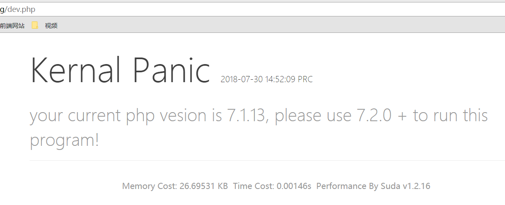

Suda - 01 基础开发环境项目配置
本次基础教程讲解一个我自己开发的Web框架项目的使用，学习前，请保证自己看得懂PHP
开发环境要求
- 运行环境
- Windows x86 | Windows x64
- PHP 7.2.x
- MySQL | MariaDB 数据库
- Apache 2.x
- 框架要求
- 版本 1.2.15 以及以上
说明：框架内使用了很多PHP新特性，所以会一直保持PHP的更新迭代，请保证框架使用最新PHP运行，也是提高网站项目运行性能的一个好方法。
开发环境安装
PHP服务器集成环境推荐：
PHP Study http://phpstudy.php.cn/phpstudy/PhpStudy20180211.zip
PHPStudy的可用PHP 7.2版本，内置 yaml 扩展
LAMPP/XAMPP
- PHP 扩展
- php_pdo_mysql（内置）
- php_yaml （可选 1.2.16支持采用 yaml作为配置文件格式）
Suda 框架
直接克隆项目即可：https://github.com/DXkite/suda.git
框架配置相关
克隆项目后，将网站根目录调整到 public 目录下，访问URL domain.com/dev.php
出现如下界面类似则算框架安装成功：

如果不是这个界面则根据报错修改相关错误
错误1：数据库账号密码错误

如果出现上述报错，说明你的MySQL的数据库账号密码错误，解决方案：
- 方案1：修改数据库的账号密码为 root
- 方案2：修改配置文件
app/resource/config/config.json
配置文件默认内容：
1 | { |
其中属性 database 为数据库配置
错误2：数据库驱动丢失

如果出现上述错误，找到你的PHP的配置文件 php.ini 全局搜索 extension=php_pdo_mysql

将前面的 ; 去掉即可
错误3：PHP版本错误

如果出现上述错误，在PHP官网下载版本为 PHP7.2
如下版本为 PHP 7.2.1 ，加入了 yml 配置文件支持。下载 PHP 7.2.1